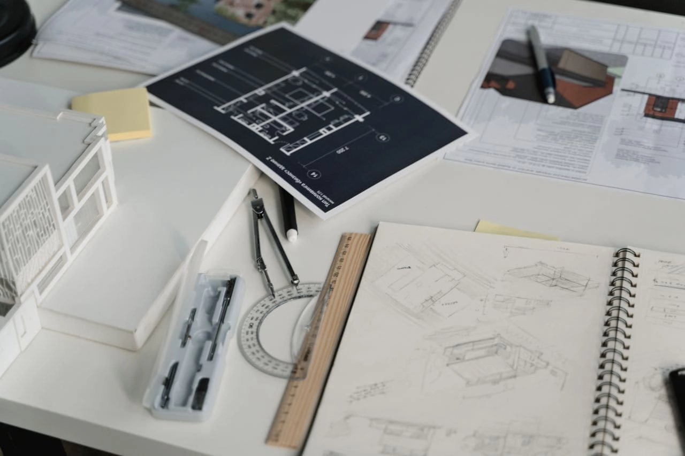
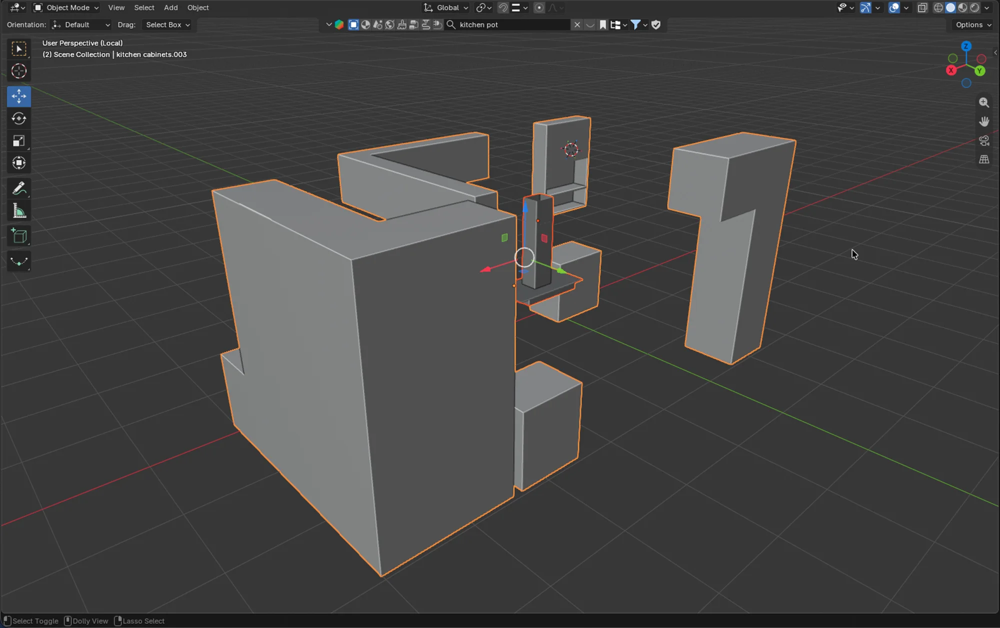
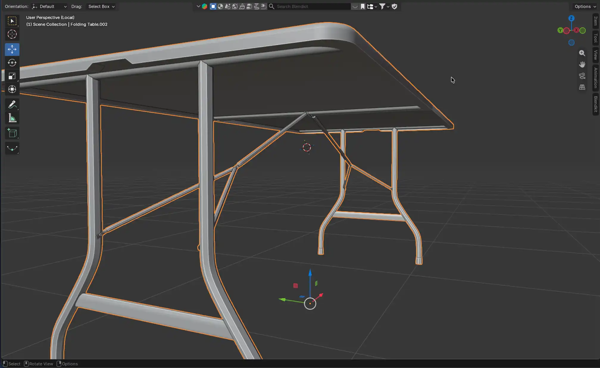
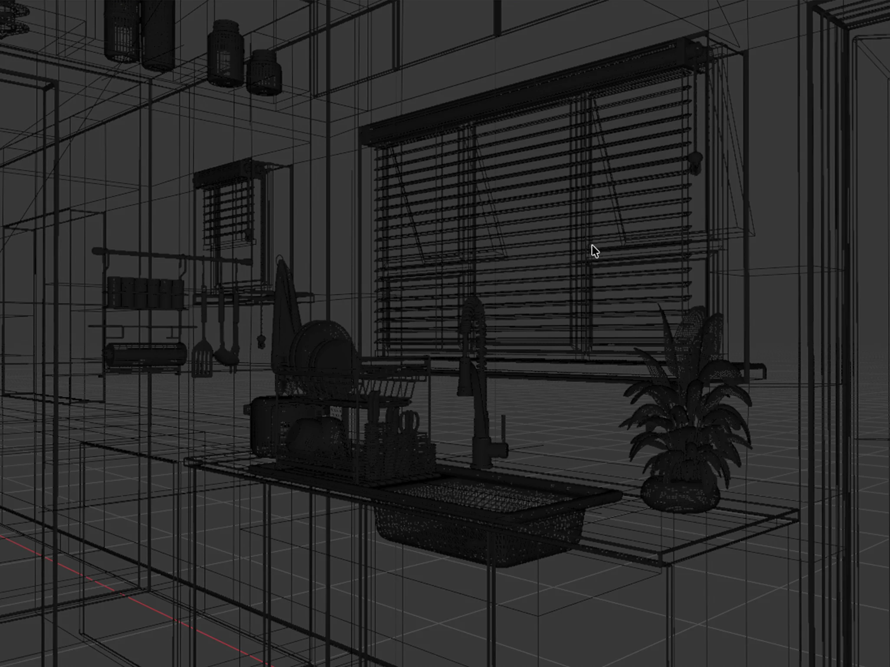
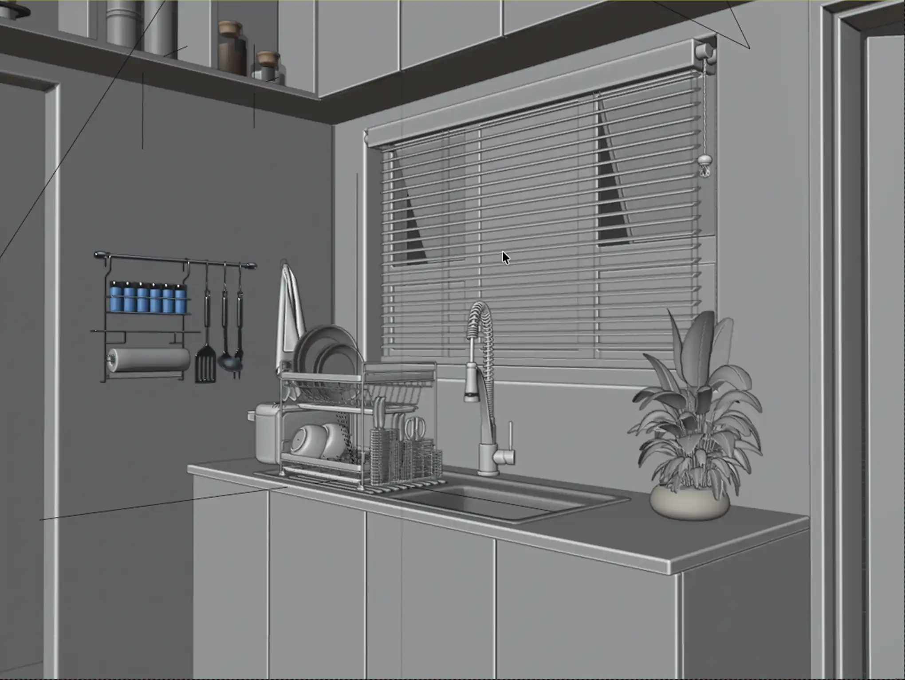
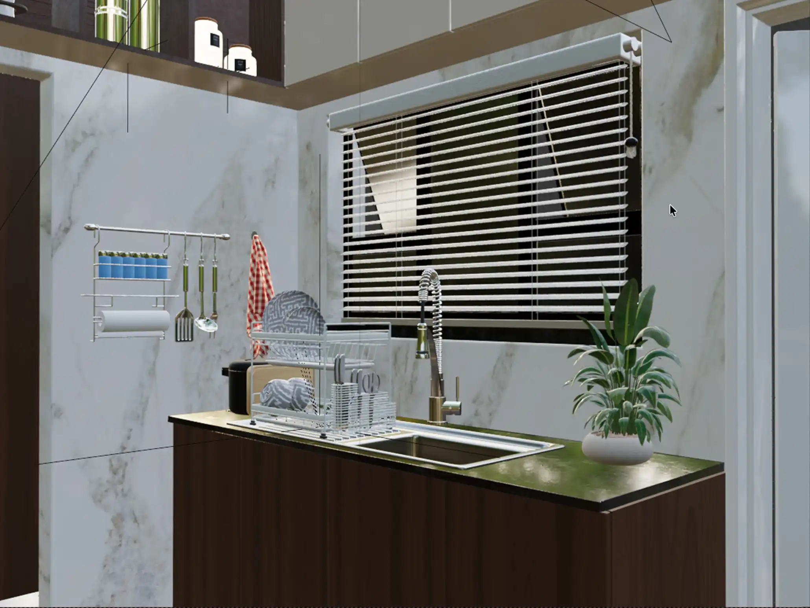
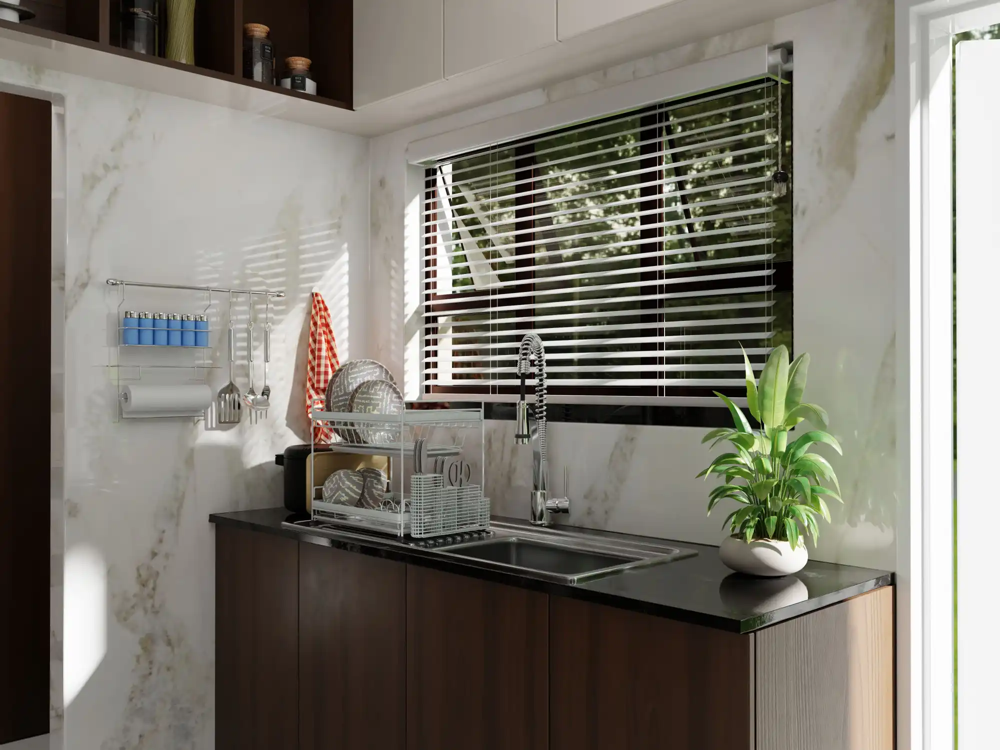

Every project starts with a purpose. Sometimes that is helping a client visualise a proposed home, sometimes
it is
presenting a commercial space before construction, and sometimes it is exploring an interior concept in
detail. Whatever
the brief, the goal is the same: create an image that communicates the design clearly while capturing its
atmosphere.
Blender gives us a flexible creative environment for taking a project from concept to photorealistic render.
Here is a
look at the essential stages of our ArchViz process.
1. Understanding the brief and gathering references
Before opening Blender, we clarify the story behind the space. We review plans, elevations, dimensions,
finishes,
furniture requirements, and the desired mood. Is the interior calm and minimal, warm and layered, or bold
and
expressive? Should the image feel like early morning, a bright afternoon, or an intimate evening?
Reference images are especially valuable at this stage. They help establish a shared visual language for
materials,
lighting, styling, landscaping, and camera direction. A strong reference board does not limit creativity; it
gives the
project a clear foundation.

2. Building the architectural model
Once the direction is clear, we build the main architectural form in Blender. This includes walls, floors,
ceilings,
openings, windows, doors, stairs, and any major fixed features such as cabinetry or fireplaces.
Accuracy matters here. Even when the image is created for an early concept, believable proportions are
essential. Room
heights, door sizes, window placement, and circulation areas all influence how a space feels. We focus first
on the
broad structure, then add the defining details that give the project its identity.

3. Adding furniture, fixtures, and detail
With the architecture in place, we begin furnishing the scene. Furniture is selected or modelled to suit the
scale,
style, and function of the room. Lighting fixtures, hardware, decor, artwork, plants, and soft furnishings
are added in
layers.
This is where a model begins to feel like an interior. We avoid filling every empty corner simply for the
sake of
detail. Instead, each item should support the composition and suggest how the space will be used. A
carefully chosen
chair, a textured rug, or a small collection of objects can add more character than excessive decoration.
4. Creating realistic materials
Materials give the design its tactile quality. In Blender, we build and refine shaders for every visible
surface, from
timber and stone to fabric, glass, plaster, and metal. Color is only one part of the process; reflectivity,
texture
scale, roughness, bump, and natural variation are what make surfaces believable.
We also introduce subtle imperfections. Real wood is not identical from board to board. Stone contains
variation. Fabric
folds and catches the light. These small details prevent a scene from feeling overly perfect or artificial.

5. Lighting the scene
Lighting determines how the design is experienced. We begin by establishing the natural light direction and
time of day,
then develop the interior lighting around it. Sunlight, skylight, lamps, pendants, and hidden lighting all
work together
to create depth and mood.
Rather than lighting every corner equally, we use contrast deliberately. Shadows give a room form, while
highlights
bring attention to materials and focal points. The aim is to create a scene that feels natural, functional,
and
emotionally inviting.
6. Choosing the camera and composing the image
The final camera view is a design decision in itself. We choose an angle that shows the layout clearly while
drawing
attention to the strongest elements of the space. A low, wide view may emphasise openness, while a closer
view can
reveal material richness and styling details.
Composition is guided by balance, framing, leading lines, and focal points. We consider what the viewer
should notice
first and how their eye should move through the image. The best ArchViz images do not simply document a
room—they tell
the story of it.

7. Rendering, refining, and final delivery
Once the scene is complete, we produce test renders and refine the elements that matter most. This may
include adjusting
a material, softening a shadow, changing a camera position, improving foliage, or refining the styling.
Rendering is an
iterative process, and these final adjustments often make the greatest difference.
After the image is rendered, light post-production can enhance colour balance, contrast, and atmosphere
while preserving
the integrity of the design. The final result is a polished visual that helps clients, architects, and
designers see the
project with confidence.




A process designed to make ideas visible
Blender is the tool, but the workflow is about communication. By moving carefully from brief to model,
materials,
lighting, composition, and refinement, we create architectural visuals that are both technically accurate
and
emotionally engaging.
A strong render gives people more than a preview of a space. It gives them a reason to believe in the design
before it
exists.